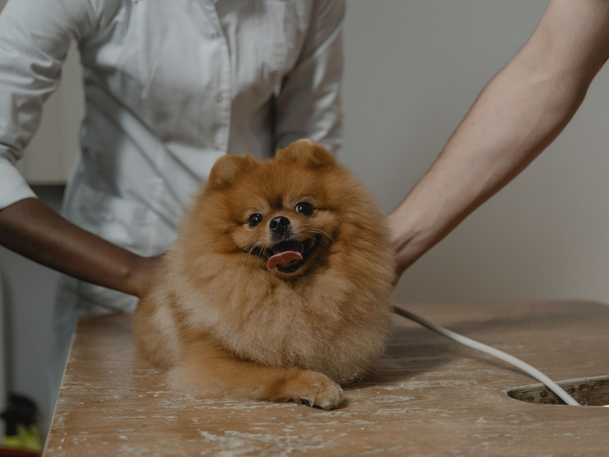
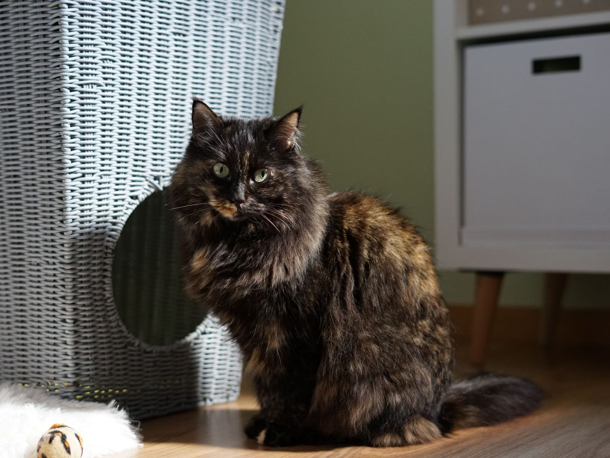
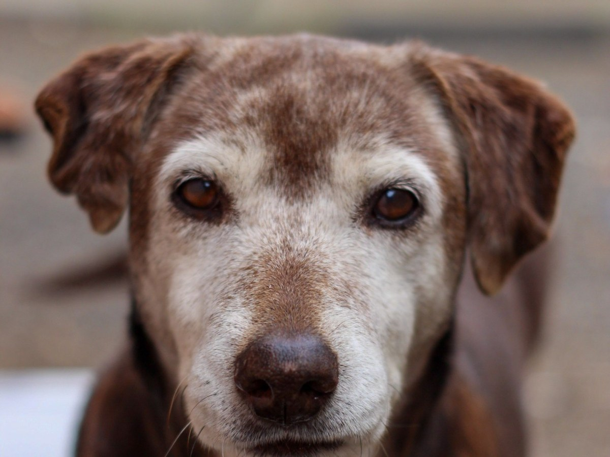
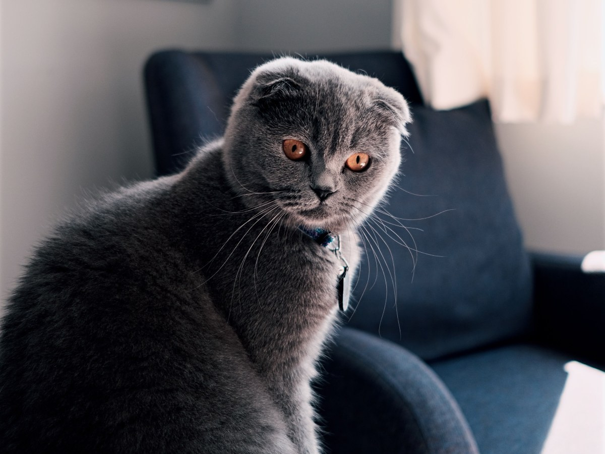
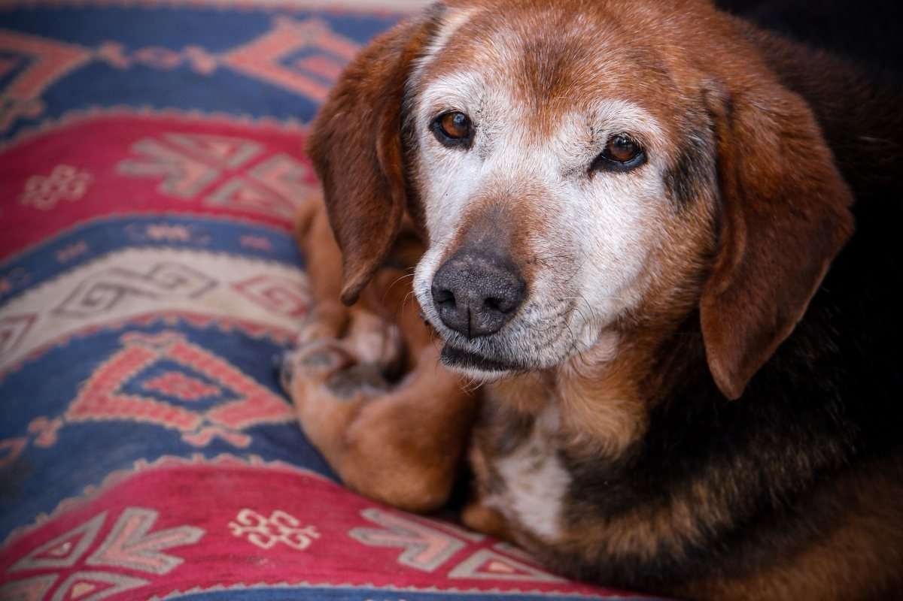

Macul · Froilán Roa 5786
Cambiarse de clínica sin perder su historia.
Clínica Veterinaria Arauco: 184 reseñas y un 4,7 en Macul.
- 184reseñas en Google
- 4,7de promedio
- 6días a la semana abierta
- 0webs: clinicaarauco.cl es de un sitio de apuestas
Si te cambias de clínica
Su historia se viene con él
Pide lo que es suyo
- La ficha o un resumen.
- Los exámenes y radiografías.
- El carnet de vacunas.
Tráelo a la primera hora
- Todo en una carpeta, o por correo.
- Lo que está tomando hoy.
- Tus dudas anotadas.
La regla de la casa. Acá no se habla mal de ningún colega: se parte de lo que hay y se sigue.
Pedir la ficha a la clínica anterior es tu derecho. Los pasos son una guía; la clínica confirma cómo recibe los antecedentes.
Se cambia la clínica, no la historia.
Qué se atiende
Lo que cuentan sus reseñas
-
Consulta
Te explica
«Resolvió todas nuestras dudas», dice una reseña.
-
Recién llegados
El nuevo integrante
La primera revisión, completa.
-

Diagnóstico
Con calma
Sus reseñas lo nombran.
-

Gatos
Sin apuro
Perros y gatos de Macul.
-

Mayores
Controles
Siguiendo su historia.
-

Sábado
Hasta las 18
De lunes a viernes, hasta las 19.
Consulta y diagnóstico salen en sus reseñas; lo demás lo confirma la clínica.
«Muy buen profesional, explica y es muy simpático».
Una reseña de Google
Los de la casa
Carpetas, siestas y hojas

Fotos de referencia: ninguna es de la clínica.
Dónde está
Froilán Roa 5786, Macul
- Teléfono
- (2) 2283 8303
- Lun a vie
- 9:00–19:00
- Sábado
- 9:00–18:00
- Domingo
- Cerrado
Ojo: en Google hay otra ficha, «Arauco Veterinaria». Ésta es la de Froilán Roa.
Froilán Roa 5786 Abrir en Google Maps
Para la Veterinaria Arauco
Qué es real y qué falta
Lo verificado
Dirección, teléfono, horario, reseñas y lo que dicen de la atención, al 13-09-2026.
Lo de ejemplo
Los pasos para cambiarse, la regla de la casa y las fotos.
Lo que falta
Un dominio propio: clinicaarauco.cl ya es un sitio de apuestas, y en Google hay otra ficha con un nombre parecido.